1 février 2026
Par Jonathan Feldstein
Dans une déclaration de 280 mots publiée le 17 janvier 2026, à la veille de Noël orthodoxe, les « patriarches et chefs des Églises de Jérusalem » ont dénoncé le sionisme chrétien comme une « idéologie nuisible et préjudiciable ». Cette brève déclaration, dépourvue de toute signature ou profondeur théologique, a suscité un vaste débat au sein des communautés chrétiennes et juives.
Analysant cette déclaration et ses implications, une conversation approfondie a eu lieu sur « Inspiration from Zion » (Inspiration de Sion), disséquant la déclaration, les raisons pour lesquelles elle a été faite à ce moment-là et explorant ses répercussions. La discussion a mis en évidence les racines bibliques du sionisme chrétien, l'identité et les motivations des signataires, ainsi que les failles du document, révélant les tensions entre la théologie, la politique et les relations interconfessionnelles.
Bien que l'identité réelle des signataires de la déclaration soit délibérément anonyme, les « patriarches et chefs des Églises de Jérusalem » représentent une coalition de confessions chrétiennes traditionnelles en Terre Sainte. Les participants à la table ronde ont identifié les « trois grands » comme étant l'Église apostolique arménienne, le patriarcat grec orthodoxe et le patriarcat latin dirigé par le cardinal Pierbattista Pizzaballa. Parmi les autres membres possibles figurent les Églises syriaque, anglicane et luthérienne.
Nicole Jansezian, journaliste israélienne chrétienne d'origine américaine, a fait remarquer que de telles déclarations émanent généralement de ces institutions, qui supervisent une population chrétienne minoritaire mais diversifiée, représentant environ 2 % de la population en Israël, et encore moins dans les territoires palestiniens.
Le Dr André Villeneuve, théologien catholique, a précisé que la déclaration avait été publiée sur les sites web grecs orthodoxes et initialement sur les sites franciscains, mais qu'elle était absente du site du Patriarcat latin, ce qui soulève des questions sur l'implication de Mgr Pizzaballa. L'anonymat des personnes qui se cachent derrière cette déclaration reste l'une des questions en suspens.
Les motivations de cette déclaration semblent être davantage liées à la politique locale qu'à une théologie profonde. Les participants à la table ronde ont expliqué qu'elle semblait viser les efforts du lieutenant-colonel Ihab Shlayan, un chrétien israélien qui milite pour une plus grande intégration des chrétiens dans la société israélienne, notamment dans l'armée israélienne et la reconnaissance de l'araméen. Originaire de Nazareth-Haut, Shlayan se qualifie lui-même de sioniste « chrétien israélien » et rejette l'étiquette « chrétien arabe ».
Les participants à la table ronde ont suggéré que les « patriarches » considéraient ses efforts, soutenus par des personnalités telles que l'ambassadeur américain Mike Huckabee, comme une atteinte à leur autorité. Quelqu'un a comparé cela à des guerres de territoire entre mafias. Villeneuve, qui a interviewé Shlayan, a souligné le cléricalisme dans les confessions traditionnelles, où le clergé exerce un contrôle sur « ses » ouailles.
Les pressions plus larges exercées par les pays et les communautés arabes, où les chrétiens sont persécutés, obligent ces dirigeants à agir avec prudence. Le pasteur Tod McDowell, de Caleb Global, a ajouté que les chrétiens traditionnels du Moyen-Orient héritent souvent de la foi comme identité culturelle, et non comme conviction personnelle, ce qui rend les positions pro-israéliennes source de division parmi les chrétiens autochtones.
Il a fait remarquer que les chrétiens autochtones et les Arabes convertis de l'islam ont souvent du mal à accepter et à surmonter leur hostilité profondément enracinée envers Israël et le sionisme, même s'ils embrassent leur foi, que de nombreux participants à la table ronde ont qualifiée de synonyme de christianisme biblique, soulignant même que Dieu Lui-même est le premier sioniste.
Le moment choisi pour la publication de la déclaration, juste avant Noël orthodoxe et à la suite d'un événement organisé par le président israélien Herzog en l'honneur des dirigeants chrétiens, auquel ont assisté de nombreux représentants des Églises qui ont promu cette déclaration controversée, voire ceux qui en sont à l'origine, a amplifié les soupçons de manœuvres politiques.
Les participants à la table ronde ont vigoureusement défendu le sionisme chrétien comme étant fondé sur la Bible, contredisant ainsi la condamnation vague contenue dans la déclaration.
Shirley Burdick, fondatrice de Ten Gentiles, a décrit le sionisme chrétien, et le sionisme en général, comme « suivant le cœur de Dieu », citant Luc (21: 24) où Jésus prophétise la restauration de Jérusalem après la domination des Gentils — un écho du Nouveau Testament aux promesses de l'Ancien Testament.
Elle a établi un lien avec Ésaïe (60: 10-12), avertissant les nations que de ne pas servir Jérusalem risquait de les mener à la ruine, présentant le sionisme comme un récit biblique continu du Tanakh (Ancien Testament) au Nouveau Testament.
Ésaïe (60: 10-12) – « Des étrangers rebâtiront tes remparts, et leurs rois seront à ton service. Car Je t’ai frappée dans Ma colère, mais dans Ma Miséricorde J’ai pitié de toi. On tiendra toujours tes portes ouvertes, elles ne seront jamais fermées, ni de jour ni de nuit, afin qu’on fasse entrer chez toi les richesses des nations et les rois avec leur suite. Car nation ou royaume qui ne te servirait pas périra; ces nations-là seront entièrement dévastées ».
McDowell en a retracé l'origine jusqu'à la définition donnée par Theodor Herzl en 1897: le droit des Juifs à une patrie, enraciné dans les Écritures comme l'alliance éternelle avec Abraham dans Genèse (15 et 17). Il a soutenu que la fidélité de Dieu envers Israël sous-tend les promesses de salut chrétiennes, qualifiant la passivité envers Israël de test décisif moderne pour la foi dans un contexte d'antisémitisme croissant.
Villeneuve, mettant l'accent sur le « sionisme biblique », l'a décomposé: le sionisme affirme l'autodétermination des Juifs sur leur terre ancestrale, conformément à la résolution 181 des Nations unies de 1947. En tant que variante chrétienne, il reconnaît les promesses irrévocables de Dieu dans les Écritures hébraïques - plus de 200 références prophétiques au rassemblement des Juifs - et les affirmations du Nouveau Testament dans Romains (9-11). Il a cité le Psaume 132 comme pierre angulaire de la position sans équivoque de Dieu que les chrétiens devraient comprendre: « Le Seigneur a choisi Sion… C'est ici Mon Lieu de repos pour toujours ».
Les participants au débat ont convenu que la déclaration des « patriarches » donne une image fausse du sionisme chrétien en le présentant comme source de division, ignorant son appel au respect mutuel et à la bénédiction de tous les peuples, conformément à Genèse (12: 3).
Les écueils de cette déclaration ont été un thème récurrent. Sa brièveté et son anonymat nuisent à sa crédibilité — Villeneuve l'a comparée à une déclaration théologique dépourvue de substance, peut-être falsifiée ou approuvée de manière sélective. Aucune définition du sionisme chrétien n'est fournie, ce qui permet de l'interpréter à tort comme un extrémisme politique plutôt que comme une conviction théologique.
Burdick y a vu la perpétuation de 2 000 ans de théologie du remplacement, en contradiction avec des documents du Vatican tels que « Les dons et l'appel de Dieu sont irrévocables » de 2015, qui affirment le rôle durable du judaïsme. McDowell a critiqué son ton alarmiste, suggérant qu'il découle d'une insécurité face au soutien croissant des évangéliques à Israël, comme en témoignent des événements tels que le récent rassemblement de 1000 leaders chrétiens.
Tous ont souligné l'ironie de la situation: tout en dénonçant la division, la déclaration non signée a aliéné les chrétiens évangéliques, créant une division publique plutôt qu'une unité, et excluant les évangéliques de toute considération comme représentants « légitimes » du christianisme en Terre Sainte.
Au final, le séminaire a transformé la controverse en dialogue, appelant à l'humilité et au dialogue. Encourageant la déclaration du « patriarche » à ne pas être considérée comme source de division, l'intention de la table ronde était de souligner que le sionisme est une valeur biblique partagée, qui n'est pas exclusivement juive et qui n'est pas « nuisible et préjudiciable ».
Alors que l'antisionisme s'intensifie à l'échelle mondiale et est souvent utilisé comme synonyme d'antisémitisme, comme en témoignent les harcèlements publics dont sont victimes des personnes identifiables comme juives ou portant des symboles pro-israéliens, ainsi que dans d'autres espaces publics, les participants au débat ont appelé à faire preuve de discernement scripturaire plutôt que de polarisation.
Dans un monde où 280 mots suffisent à déclencher une tempête, de telles discussions permettent de combler les divisions, d'affirmer les promesses de Dieu et de transcender la politique.
Une question a ensuite été soulevée: l'antisionisme est-il de l'antisémitisme, cela rend-il antisémites les chrétiens qui ne soutiennent pas Israël, et n'est-ce qu'une couverture pour des opinions aussi odieuses et non bibliques?
- Jonathan Feldstein
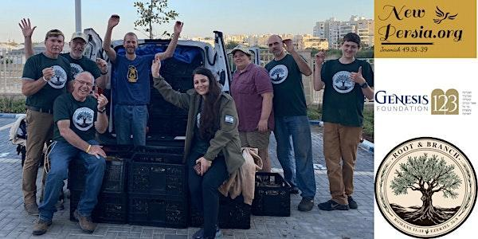
« Construire des ponts et planter des racines en Israël et parmi le peuple juif avec un amour inconditionnel »
En tant que partenariat entre la Genesis 123 Foundation et NewPersia.org, les cofondateurs Marziyeh Amirizadeh et Jonathan Feldstein organisent une conférence spéciale pour rassembler les Juifs et les Chrétiens afin de partager et d’élargir l’impact puissant de Root & Branch. À la lumière de la récente guerre entre Israël et la République islamique d’Iran, c’est d’autant plus significatif et critique, en particulier avec les fondateurs qui représentent un espoir pour l’avenir.
Marziyeh (Marzi) Amirizadeh est une Américain d’origine iranienne qui a immigré aux États-Unis après avoir été condamnée à mort par pendaison en Iran pour le « crime » de se convertir au christianisme. Marzi est une autrice, un orateur public et une chroniqueuse publiée. Son premier livre, « Captive in Iran », raconte sa capture et son emprisonnement. Son deuxième livre, « Un voyage d'amour avec Dieu », partage comment Marzi a trouvé Dieu, les luttes qu'elle a vécues en tant que femme chrétienne dans un pays islamique et comment Dieu peut transformer n'importe quelle situation en triomphe. (www.marzisjourney.com)
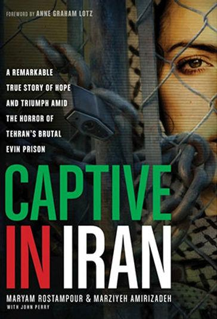
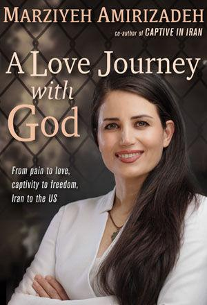
Marzi est également la fondatrice et présidente de NEW PERSIA, une organisation dont la mission est d’être la voix des chrétiens persécutés et des femmes opprimées sous l’islam, de préserver la démocratie qui est menacée en Occident par l’islam extrémiste, d’exposer les mensonges du régime islamique iranien et de restaurer les relations entre les Perses, les Juifs et les Chrétiens. (www.newpersia.org)
Jonathan Feldstein est président de la Fondation Genèse 123 dont la mission est de construire des ponts entre Juifs et Chrétiens et Chrétiens avec Israël. Il est né et a fait ses études aux États-Unis et a immigré en Israël en 2004. Il est marié et père de six enfants, et grand-père de quatre enfants (jusqu'à présent). (www.genesis123.co)
Depuis le massacre du Hamas le 7 octobre 2023 en Israël, il a écrit des centaines d'articles, est apparu dans de nombreuses interviews dans les médias, a accueilli des dizaines de briefings et a utilisé sa voix pour faire avancer la mission de construire des ponts entre juifs et chrétiens à travers de multiples événements de prière mondiaux. Jonathan est également l'hôte du podcast « Inspiration from Zion ».
En 2023, il a publié le livre très acclamé, « Israël le miracle », y compris des essais de 75 dirigeants chrétiens du monde entier écrivant sur la raison pour laquelle Israël est important pour eux. https://www.israelthemiracle.com
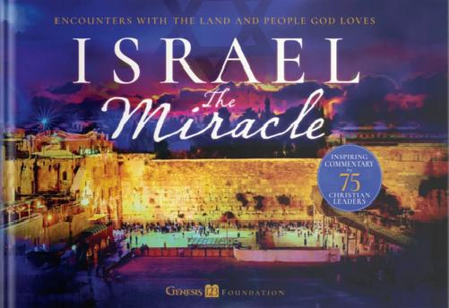
11 septembre 2025
Par Charles Gardner
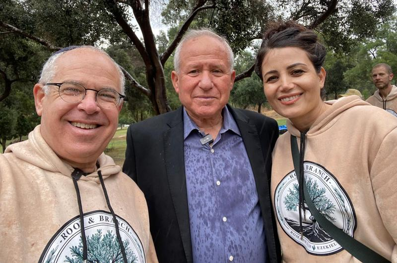
Des représentants épris de paix de deux nations récemment en guerre se sont associés d'une manière remarquable, porteuse d'espoir pour la réconciliation future.
Marziyeh Amarizadeh, une évangéliste iranienne désormais installée aux États-Unis, s'est jointe au Juif orthodoxe Jonathan Feldstein afin de soutenir Israël sur les plans économique et spirituel, suite au massacre du 7 octobre 2023 qui a déclenché la guerre de Gaza.
À travers leur mouvement Root & Branch, ils encouragent les touristes à récolter des oliviers sauvages lors d'un pèlerinage agricole. La guerre a durement frappé les secteurs du tourisme et de l'agriculture, et les pèlerins ont déjà apporté une contribution significative à l'économie locale, injectant 50 millions de dollars dans l'économie l'an dernier grâce à l'huile d'olive vierge extra produite à partir d'environ mille kilos de ce précieux fruit.
De plus, Marzi a présenté ses excuses à un groupe de soldats pour les actes des islamistes extrémistes qui dirigent son pays natal et qui cherchent à détruire Israël.
Pour sa part, Marzi a vécu une rencontre bouleversante avec Jésus en 1999 et a été emprisonnée et condamnée à mort en 2009 pour le « crime » de s'être convertie au christianisme. Elle a passé neuf mois dans la tristement célèbre prison d'Evin à Téhéran, où elle a subi des atrocités indescriptibles et a été témoin de l'exécution et de la torture de sa meilleure amie et de ses codétenues.
Lorsqu'elle s'est convertie au christianisme, elle a compris l'importance d'Israël et du peuple juif et rêvait de visiter la terre de son Sauveur. Peu après son premier voyage en 2023, elle s'est liée d'amitié avec Jonathan, à qui elle a fait part de son projet d'emmener des chrétiens en Israël pour récolter les olives, au moment où la nation en avait le plus besoin, notamment en raison de la signification biblique de ce fruit.
« Root & Branch » est une reconnaissance de la vérité biblique selon laquelle, si les non-Juifs sont les branches d'olivier sauvage, le peuple juif est la racine qui les soutient Romains (11: 18).
Américain d'origine, Feldstein, alors en poste au consulat israélien d'Atlanta dans les années 1980, a été chargée de bâtir des ponts entre Juifs et Chrétiens et poursuit encore aujourd'hui cette mission. Un voyage initiatique exceptionnel pour les passionnés de R&B est prévu du 19 au 26 octobre, organisé par les associations respectives de Marzi et Jonathan, NewPersia.org et la Genesis 123 Foundation. Pour plus d'informations, veuillez contacter rootandbranchisrael@gmail.com.
Marzi, quant à elle, envisage la restauration de l'amitié d'antan entre Juifs et Perses: « Restaurer les liens entre Juifs et Perses qui soutiennent Israël est primordial, car pendant de longues années, le régime islamique a tenté d'attiser la haine des Juifs dans le cœur et l'esprit des Iraniens. Aujourd'hui, la majorité des Iraniens soutiennent Israël car ils comprennent qui est leur véritable ennemi et que nous, Israéliens et Iraniens, combattons un ennemi commun ».
Après le 7 octobre, Marzi est retourné sur place pour exprimer sa solidarité: « J'ai été témoin des terribles destructions en Israël et de la résilience de son peuple. Un oléiculteur près de la frontière de Gaza m'a confié que ce dont nous avons vraiment besoin, c'est que nos amis chrétiens nous témoignent leur amour ».
L'année dernière, les pèlerins ont été transportés par l'un des héros du 7 octobre, un Bédouin arabe nommé Yousef Ziyadne, qui a risqué sa vie pour secourir 30 personnes du festival Nova à bord de son minibus de 14 places.
Si vous voulez être bénis, la Bible vous dit exactement comment faire: bénissez simplement la descendance d'Abraham Genèse (12: 3).
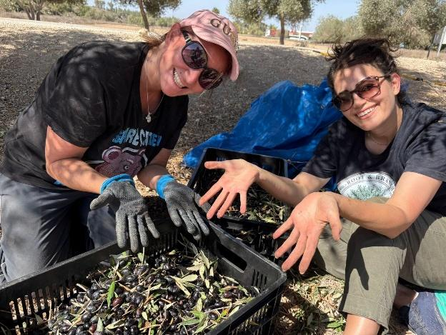
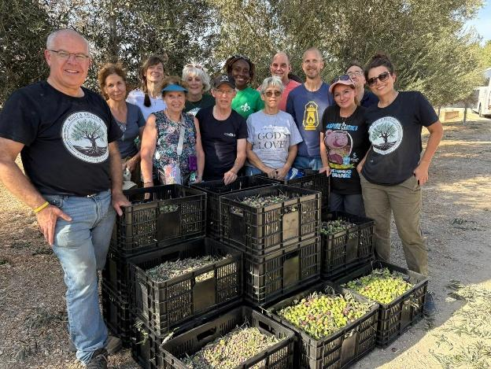
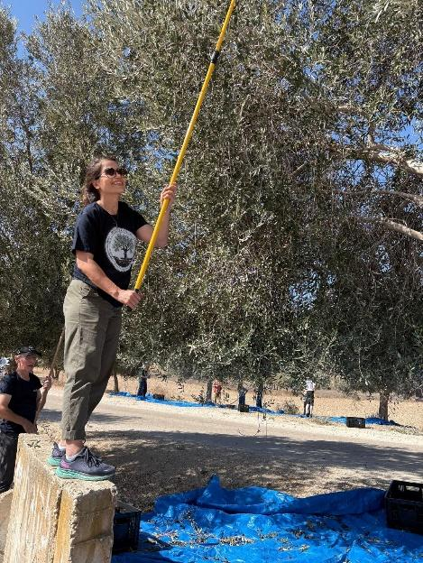
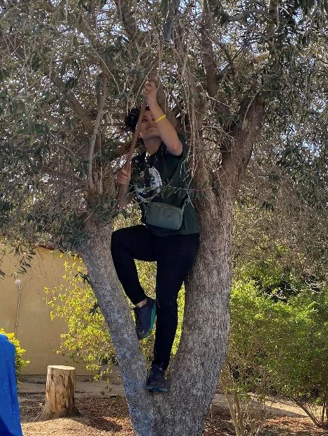
Par Doron Keidar
Le 9 janvier 2026, j'ai rejoint une délégation composée notamment d'Ihab Shlayan (président de The Israeli Christian Voice), de l'évêque Ephram Samman (patriarcat catholique syrien), du père Yaqubos Abu Akel (Kfar Yasif), du père Antonius Ajini (Jdaieh El-Makir), Shana Meyerson et des représentants du Jerusalem Institute for Justice, pour une réunion avec l'ambassadeur américain en Israël, Mike Huckabee. Notre objectif était clair: promouvoir les droits, le statut et l'image publique de la communauté chrétienne d'Israël tout en renforçant les liens stratégiques, culturels et diplomatiques avec le monde occidental et chrétien.
Quelques jours plus tard, le 17 janvier 2026, les patriarches et les chefs des Églises de Jérusalem ont publié une déclaration critiquant le « sionisme chrétien » comme une « idéologie néfaste » qui induit le public en erreur, sème la confusion et nuit à l'unité de leur troupeau [1]. Ils ont affirmé leur représentation exclusive de la vie chrétienne en Terre Sainte, exprimant leur inquiétude face aux influences extérieures et aux accueils officiels.
Cette déclaration a provoqué une onde de choc dans le monde chrétien. De grandes organisations, dont l'Ambassade chrétienne internationale de Jérusalem (ICEJ), qui l'a réfutée sur le plan biblique [2], et des personnalités telles que l'ambassadeur Huckabee ont réagi fermement [3]. M. Huckabee a souligné qu'aucune tradition ne peut prétendre parler au nom de tous les chrétiens, défendant le soutien évangélique à Israël comme étant ancré dans les Écritures [4].Des médias tels que Religion News Service ont mis en évidence le clivage entre les Églises historiques dirigées par des Arabes, confrontées au déclin démographique et aux pressions régionales, et les évangéliques occidentaux qui considèrent le soutien à Israël comme un impératif religieux [5].
En tant que juif engagé dans la défense de mes frères et sœurs chrétiens en Terre Sainte, j'ai trouvé cette lettre décourageante, car elle constitue un obstacle aux progrès pour lesquels nous nous sommes battus. Israël, en tant qu'autorité souveraine, offre aux chrétiens une liberté de culte et une sécurité sans précédent, ce qui contraste fortement avec la persécution et le statut de dhimmi dont beaucoup ont été victimes historiquement sous la domination islamique ou actuellement dans certaines parties des territoires palestiniens [6].
On ne mord pas la main qui vous protège. Si la communauté chrétienne souhaite s'épanouir en tant que membre à part entière de la société israélienne, elle doit se libérer de la peur et des pressions extérieures. Israël offre des garanties démocratiques, une reconnaissance et un espoir sincère, des promesses que l'Autorité palestinienne n'a pas pleinement tenues.
Le moment choisi, pendant la Semaine de prière pour l'unité des chrétiens (du 18 au 25 janvier 2026), souligne un test profond: les chrétiens s'uniront-ils autour du soutien biblique à la restauration d'Israël, ou permettront-ils que cela les divise?
Comme John Enarson l'affirme avec force dans son article publié le 22 janvier 2026 sur Israel365 – « Pourquoi nous sommes des sionistes protestants », le véritable sionisme chrétien s'oppose à la théologie du remplacement et affirme les alliances éternelles de Dieu [7].
Il est temps que la communauté chrétienne de Terre Sainte se lève, s'aligne sur l'État démocratique d'Israël et embrasse la liberté qu'il offre de manière unique. L'alternative, qui consiste à rester sous la menace des djihadistes ou sous des contrôles dépassés, ne sert personne.
Ce n'est pas une division, mais un chemin vers la véritable unité, fondé sur les Écritures et la réalité.
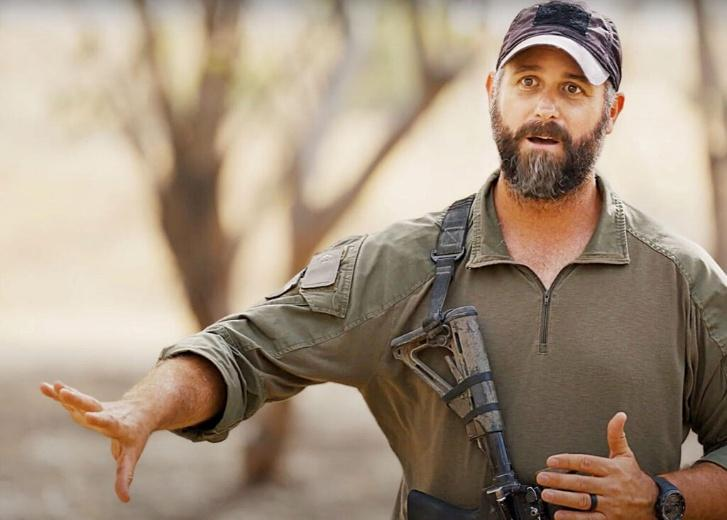
Doron Keidar est un conférencier international connu pour partager des informations qui sont de première main et pertinentes issues de plusieurs décennies passées à défendre l'État d'Israël. Parlant couramment l'anglais et l'hébreu, il touche un public de tous âges grâce à son style audacieux, direct et engageant. Depuis 2003, Doron sert dans une unité de combat des Forces de défense israéliennes (FDI) et reste actif dans la réserve depuis 2006. Il sert actuellement dans l'une des unités mobiles d'élite de l'armée israélienne au sein des forces spéciales de réserve, avec plus de 20 ans d'expérience opérationnelle à Gaza, au Liban et en Judée- Samarie. Au-delà de son service militaire, Doron a près de deux décennies d'expérience dans la protection des cadres supérieurs, travaillant aux côtés des meilleurs professionnels de la sécurité israéliens et américains. Il a assuré la sécurité de personnes fortunées, de grandes entreprises du classement Fortune 500 et de services de sécurité gouvernementaux. Au lendemain des attentats du 7 octobre 2023, Doron a commencé à travailler avec les forces spéciales américaines, des vétérans de la GWOT (guerre contre le terrorisme), dont des membres de la « Task Force Pineapple », afin d'aider les forces de l'ordre américaines et les communautés locales à se préparer aux menaces émergentes. Il anime le podcast The Doron Keidar Podcast et est producteur exécutif et acteur principal du film I AM ISRAEL – The Mountain of the King. Doron est également actif au sein de Cry For Zion, un mouvement qui défend les droits des Juifs sur le Mont du Temple. À travers des preuves historiques, archéologiques et bibliques, il offre au public une vision captivante du passé, du présent et de l'avenir prophétique de Jérusalem.
Notes de bas de page
[1] « Déclaration des patriarches et chefs des Églises de Jérusalem sur l'unité et la représentation des communautés chrétiennes en Terre Sainte », Patriarcat de Jérusalem, 17 janvier 2026. Disponible à l'adresse: https://en.jerusalem- patriarchate.info/announcements/a-statement-from-the-patriarchs-and-heads-of-the-churches-in-jerusalem-on-unity-and- representation-of-the-christian-communities-in-the-holy-land
[2] « Réponse de l'ICEJ à la déclaration des patriarches dénonçant le sionisme chrétien », Ambassade chrétienne internationale de Jérusalem, 20 janvier 2026. Disponible à l'adresse: https://www.icej.org/blog/icej-response-to-patriarchs-statement-denouncing- christian-zionism
[3] Divers rapports, notamment dans The Jerusalem Post et Crux, 20-22 janvier 2026.
[4] Déclaration de Mike Huckabee sur X (anciennement Twitter), 20 janvier 2026: « J'aime mes frères et sœurs en Christ issus des Églises traditionnelles et liturgiques et je respecte leurs opinions, mais je ne pense pas qu'une partie des chrétiens puisse prétendre parler au nom de tous les chrétiens du monde... »
[5] « Les églises historiques de Jérusalem qualifient le sionisme chrétien d'idéologie « nuisible » », Religion News Service, 20 janvier 2026. Disponible à l'adresse: https://religionnews.com/2026/01/20/jerusalem-historic-churches-call-christian-zionism-a-damaging- ideology
[6] Bureau central des statistiques d'Israël (données de 2025): la population chrétienne en Israël est passée à environ 184 200 personnes (1,9 % de la population), soit une augmentation de 0,7 %. En revanche, les territoires palestiniens affichent un déclin constant (par exemple, environ 45 000 à 50 000 chrétiens en Cisjordanie et moins de 1 100 à Gaza). Sources: Zenit.org (29 décembre 2025) et données historiques du Bureau central palestinien des statistiques.
[7] John Enarson, « Why We Are Protestant Zionists » (Pourquoi nous sommes des sionistes protestants), Israel365 News, 22 janvier 2026. Disponible à l'adresse: https://israel365news.com/415527/why-we-are-protestant-zionists/. Enarson soutient que le sionisme protestant rejette le supersessionisme (théologie du remplacement) et défend les promesses bibliques de restauration juive.
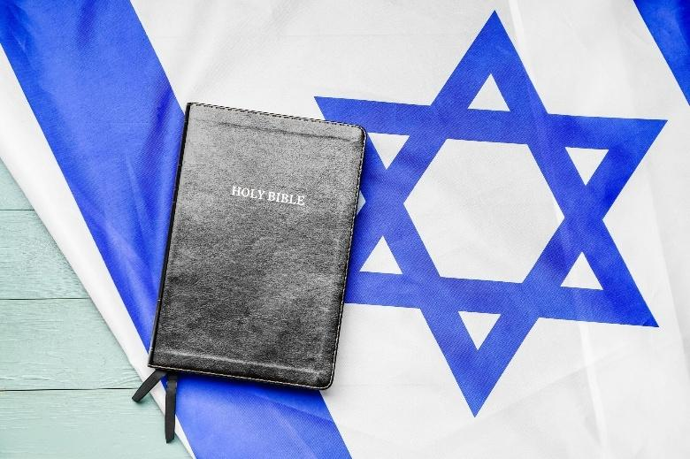
26 janvier 2026
Par Tamar Stein
Un éminent théologien a contesté les récentes critiques formulées par Michael Knowles, animateur du Daily Wire, à l'encontre du sionisme chrétien, affirmant que le commentateur conservateur avait déformé à la fois la tradition théologique et les propos de son collègue sioniste chrétien Robert Stearns.
Tout en félicitant Knowles pour son soutien à Israël fondé sur le droit international, le théologien anglican Gerald R. McDermott, qui enseigne au Reformed Episcopal Seminary de Philadelphie, a contesté la description faite par Knowles du sionisme chrétien comme une « tendance protestante de niche » apparue au XIXe siècle.
Au contraire, la réponse de McDermott, publiée sur Catholics for Israel, soutient que le sionisme chrétien – la croyance selon laquelle Dieu a ramené le peuple juif sur la terre qu'Il lui avait promise – remonte au Nouveau Testament lui-même.
La défense cite la lettre de l'apôtre Paul aux Romains, dans laquelle il décrit le peuple juif comme « aimé à cause de ses pères » et déclare que « Ses dons et Son appel sont irrévocables » Romains (11: 28-29). Le théologien note que « l'appel » était un terme technique désignant le choix par Dieu des descendants d'Abraham, tandis que les « dons » comprenaient la promesse de la terre faite dans Genèse (17: 8).
La réponse renvoie également aux Actes des Apôtres, où Paul fait explicitement référence à Dieu donnant à Israël « leur terre en héritage » après avoir détruit sept nations en Canaan – une déclaration faite plus de vingt ans après sa conversion.
Contrairement à l'affirmation de Michael Knowles dans le Daily Wire selon laquelle le sionisme est étranger à l'enseignement catholique, l'article cite plusieurs Pères de l'Église qui ont enseigné des éléments de l'espoir sioniste chrétien, notamment Justin Martyr, Irénée et Tertullien.
Plus récemment, le document du Vatican de 2015 intitulé « Les dons et l'appel de Dieu sont irrévocables » rend hommage à « l'amour continu de Dieu pour le peuple élu d'Israël ». En 1991, le pape Jean-Paul II a qualifié le retour des Juifs dans les « montagnes d'Israël » d'accomplissement de la prophétie d'Ézéchiel.
Le théologien catholique anglais Gavin D'Costa identifie dans des documents récents de l'Église une trajectoire vers ce qu'il appelle le « sionisme catholique minimaliste », basé sur l'affirmation que l'alliance juive reste irrévocable et inclut la promesse de la terre.
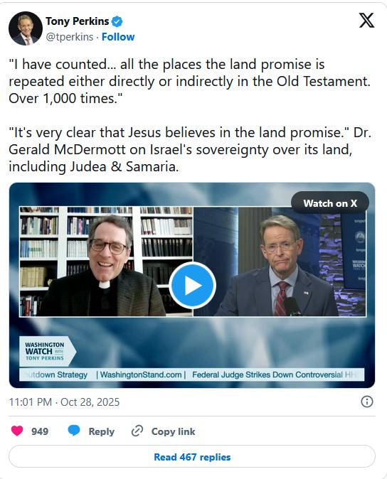
McDermott défend Robert Stearns, fondateur d'Eagle's Wings, contre des accusations spécifiques, soulignant que Knowles s'est appuyé sur des sources secondaires et a mal compris des déclarations clés.
Concernant la réponse prétendument contradictoire de Stearns sur la question de savoir si le retour du Christ à Jérusalem serait sa première ou sa seconde venue, la réponse explique que Stearns voulait dire que ce serait la première venue du Christ pour de nombreux Juifs et sa seconde pour ceux qui se sont déjà convertis, une distinction que de nombreux prédicateurs catholiques ont faite.
L'article conteste également la critique formulée par Knowles à l'encontre de Stearns pour avoir présenté ses excuses aux Juifs pour des siècles de persécution chrétienne, en rappelant la messe du pardon célébrée par le pape Jean-Paul II en 2000 et la déclaration faite par le pape Benoît XVI en 2010 à la Grande Synagogue de Rome, dans laquelle il déplorait les « défaillances » historiques de l'Église en matière d'antisémitisme.
La réponse se termine en exprimant sa gratitude pour le travail de Knowles contre l'antisémitisme, tout en l'exhortant à reconsidérer ses critiques à l'égard d'un « frère chrétien dont l'enseignement est plus proche de l'enseignement catholique qu'il ne l'imagine ».
23 janvier 2026 ↩